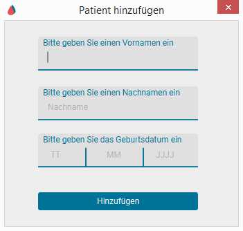
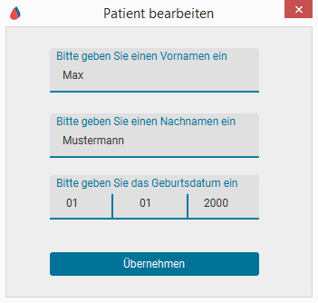
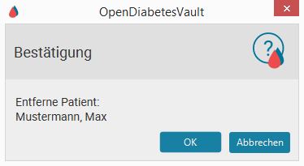

Patientenauswahl - Hilfe
1. Patient auswählen
- Klicken Sie in der Tabelle auf die Zeile des Patienten.
Anschließend erscheint der Name des Patienten im Anwendungstitel. - Verwenden Sie alternativ einen Doppelklick, um einen Patienten
auszuwählen und direkt zum Importbereich zu wechseln. - Verwenden Sie die Suchleiste, um lexikographisch nach Patienten zu suchen.
2. Patient hinzufügen
- Klicke auf

- Gebe Vorname, Nachname und Geburtstag ein.
- Klicke auf "Hinzufügen".

3. Patient bearbeiten
- Wähle einen Patient aus.
- Klicke auf

- Ändere den Vornamen, Nachnamen oder das Geburtsdatum.
- Klicke auf "Übernehmen".

4. Patient löschen
- Wähle einen Patient aus.
- Klicke auf

- Klicke auf "OK".
